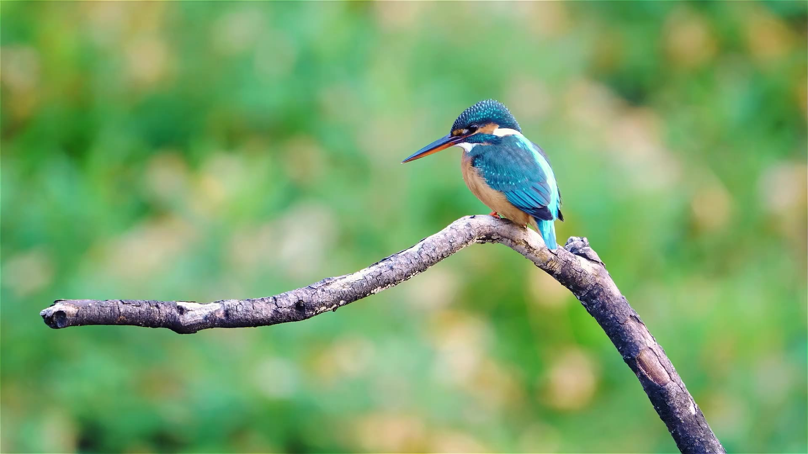

wildacre
Seven years ago this was wheat.
The Teme valley farm had been ploughed every year since 1947. In 2019 the trust bought it, took the fences down and stopped. No planting, no spraying, no plan except patience. Thorn scrub came first, then jays planting oaks, then the deer.
Today a herd of 40 red deer keeps the glades open, as wild herbivores would have done. The trust counts everything that returns, and every acre has a guardian who sees it happen.
fig. 1 · red deer stag, north glade, 06:40
“We didn't plant a single tree. The jays did it for us.”
— Ellie Marsh, warden
Your acre, in your pocket.
Adopt a numbered acre and the Wildacre app shows you its habitats, its camera trap and every species logged on it. When something new turns up, you're the first to know.
Your acre
Last night

8°C · 72% RH
What walks across your acre at 2 am.
Ninety-one infrared camera traps run every night. In the morning their clips sort themselves by species, and your acre's arrive in the app before breakfast.
The beavers did the rest.
Two beaver families were released in 2021. Their dams have flooded a drained field back into a wetland, holding storm water that used to rush down into Tenbury. Kingfishers fish the new pools, and otters have followed the fish.
fig. 2 · beaver at the lower dam
held behind 14 dams
Adopt an acre.
Your adoption pays for the fences we take down, the camera traps and the wardens' time. You get a numbered acre, the app, and two guided walks a year on your own patch of the valley.
gift aid adds 25% · cancel any time · registered charity no. 1189472
A tenth of an acre, the app and camera-trap highlights.
A whole numbered acre, its own camera trap and two walks a year.
Five acres for a family or a business, with a dawn safari.